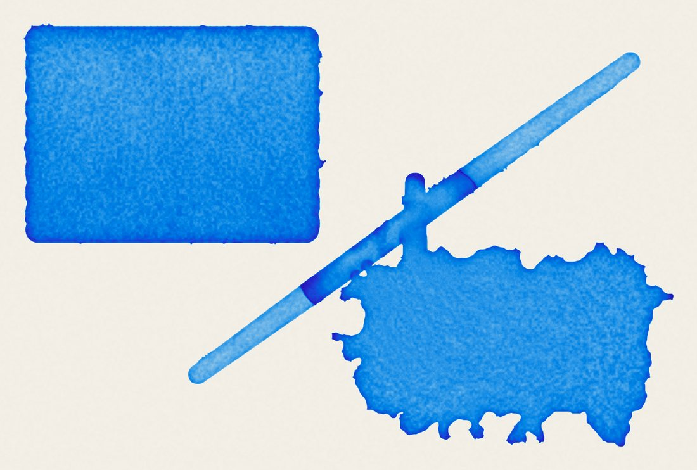
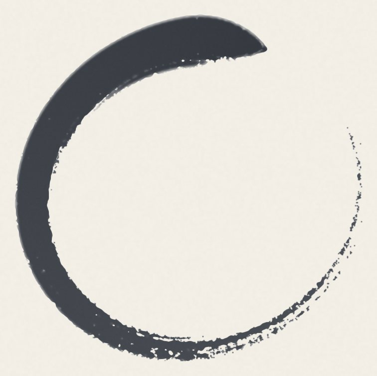
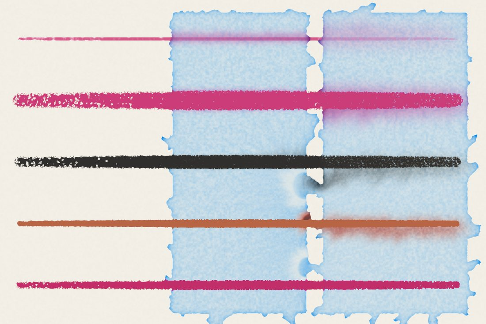
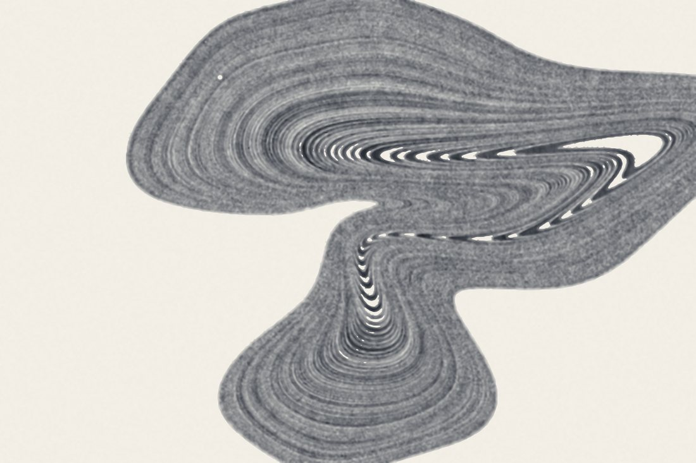
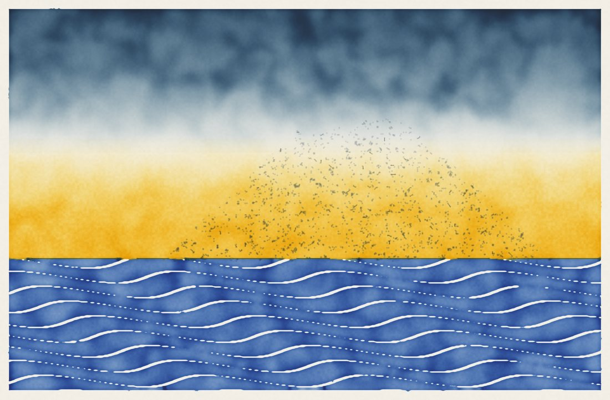
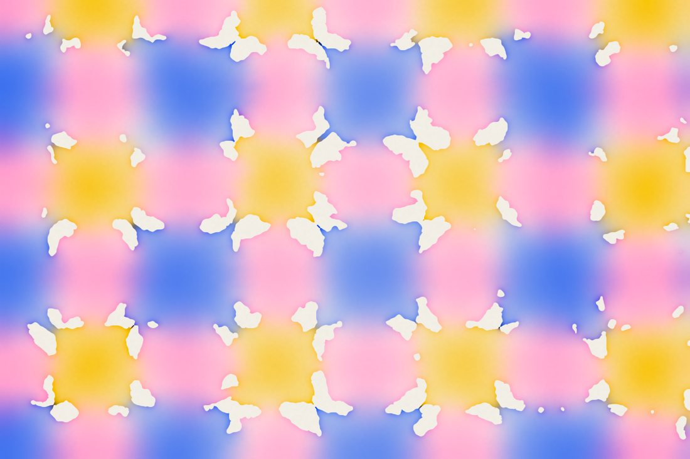
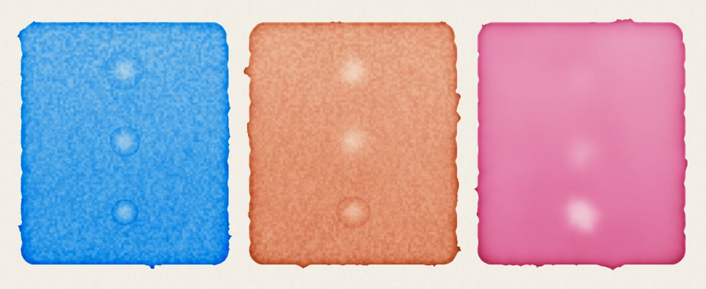

진짜처럼 움직이는 물감

수채화
웨트 온 웨트, 번짐, 물자국과 꽃양배추 무늬, 진한 가장자리, 입자 침전. 미리 그려진 것은 없고, 모든 것은 종이 결 위를 흐르고 마르는 물에서 생겨납니다. 붓은 눕고, 벌어지고, 물감이 줄어드는 털의 다발입니다.
손끝에서: 물과 안료의 양, 건조, 드라이어, 종이의 기울기, 아라비아 고무와 우담즙.

먹과 잉크
농담이 있는 먹, 갈라지는 붓끝, 종이 결에 끊기는 갈필. 스펙트럼으로 정의된 컬러 잉크는 젖은 종이에서 서로 분리됩니다.

과슈, 아크릴, 건식 재료
물감은 종이의 결을 따르고, 아크릴은 말라서 종이를 덮는 막이 됩니다. 연필, 파스텔, 분필, 목탄은 아직 젖은 담채 속으로 번집니다. 색은 일곱 개의 스펙트럼 대역에서 안료처럼 섞입니다.
세 개의 일본 공방

스미나가시
물 위에 먹을 올리고, 불고, 빗질한 뒤 종이에 떠냅니다.

목판화
판목을 새기고, 먹을 바르고, 바렌으로 찍어 냅니다.

오리조메가미
종이를 접고, 모서리를 색에 담근 뒤 펼칩니다.
종이와 스케치북
황목, 세목, 화선지, 유포, 캔버스. 종이마다 물을 머금고, 마르고, 우는 방식이 다르며 자연스러운 가장자리도 있습니다. 종이는 스케치북과 병풍첩에 모이고 PDF나 EPUB 책이 됩니다. 인쇄용으로는 16비트 TIFF나 레이어가 있는 PSD로 내보냅니다.

이 페이지의 모든 이미지는 Inksumi 엔진이 그린 것입니다.
개인정보 처리방침
업데이트: 2026년 11월 7일
요약
inksumi는 어떤 개인 데이터도 수집하지 않습니다. 앱에는 계정, 광고, 분석 도구, 추적기가 없으며 어떤 서버에도 연결하지 않습니다. 그린 작품은 사용자의 기기에 남습니다.
기기에 저장되는 항목
- 내 종이와 스케치북: 그림(레이어, 아직 젖은 물), 종이, 물감, 제목, 썸네일, 타임랩스, 그리고 올려 둔 이미지(참고 사진, 스텐실, 요철).
- 나의 팔레트, 판목, 설정(붓, 서명, 앱 환경설정).
- 펜과 입김 조정을 위한 마지막 스무 획(위치, 필압, 기울기)과 마이크가 마지막으로 들은 소리 크기(숫자만, 소리 없음)를 로컬 파일에 저장.
이 파일은 앱 전용 공간에 남습니다. iOS 설정에 따라 Apple이 관리하는 기기 백업(iCloud 또는 컴퓨터)에 포함됩니다. 발행자는 이 파일에 절대 접근하지 않습니다.
권한
- 사진: 요청할 때 내보낸 이미지를 사진 보관함에 저장하고, 직접 고른 사진을 종이 옆 참고 사진이나 스텐실로 열기 위해. inksumi는 직접 고른 사진만 읽으며, 사진은 기기에 남습니다.
- 마이크: 스미나가시에서 '마이크에 불기'를 켜면 소리의 크기가 물 위의 먹을 밀어냅니다. 어떤 소리도 녹음하거나 보내지 않으며, 옵션을 끄거나 수조를 떠나면 마이크가 꺼집니다.
- 파일: 권한이 필요 없습니다. inksumi는 직접 고른 파일(SVG 모양, 이미지)만 엽니다.
- 기기 움직임: iPad의 기울기에 따라 물이 흐르고 종이 위 빛의 방향이 바뀝니다. 그 순간에만 사용하며 저장하지 않습니다.
- 펜: 필압, 기울기, 방향으로 획을 그립니다. 그리기에만 사용합니다.
사진이나 마이크 접근 권한은 언제든지 설정에서 철회할 수 있습니다.
공유
이미지나 파일은 사용자가 직접 공유할 때(iOS 공유 시트)만 앱 밖으로 나가며, 대상은 사용자가 선택합니다. inksumi는 스스로 아무것도 보내지 않습니다. 서명을 설정했다면(공유 › 서명) 이름과 권리 표기가 내보낸 파일에 기록됩니다.
아동
inksumi는 아동의 데이터를 포함해 어떤 데이터도 수집하지 않습니다.
사용자의 권리
어떤 데이터도 수집하지 않으므로 발행자는 사용자에 관한 정보를 전혀 보관하지 않습니다. 종이는 사용자가 관리합니다. 갤러리에서 길게 눌러 한 장씩(최근 삭제된 항목에 30일 동안 남은 뒤 지워집니다), 앱을 삭제하여 전부 지울 수 있습니다.
연락처
이 정책에 관한 문의는 지원 페이지를 통해 발행자에게 보내 주십시오.
변경 사항
이 정책이 변경되면 새 버전을 날짜와 함께 앱과 이 페이지에 게시합니다.
이 페이지
이 페이지는 GitHub Pages에서 호스팅됩니다. 쿠키를 설정하지 않고 외부 리소스도 불러오지 않습니다. GitHub는 자체 개인정보 처리방침에 따라 기술적인 접속 기록을 보관할 수 있습니다.
나의 종이
백업
종이는 iOS 설정에 따라 기기 백업(iCloud 또는 컴퓨터)에 포함됩니다.
삭제
삭제한 종이는 최근 삭제된 항목에 30일 동안 남아 있어 복구할 수 있습니다. 앱을 삭제하면 모든 종이가 지워집니다.
작품은 사용자의 것입니다
inksumi로 그린 작품은 사용자의 것입니다. 앱은 사용자의 이미지에 어떤 권리도 주장하지 않습니다.
이용 약관
inksumi는 App Store를 통해 라이선스가 부여된 애플리케이션에 대한 Apple 표준 사용권 계약에 따라 배포됩니다. 앱 자체의 별도 약관은 없습니다.
법적 고지
- 앱
- inksumi, iPad용
- 발행자
- Jérôme Houix
- 발행 책임자
- Jérôme Houix
- 연락처
- 지원 페이지
- 앱 호스팅
- 없음: inksumi는 서버 없이 기기에서만 작동합니다. 앱은 Apple의 App Store를 통해 배포됩니다.
- 이 페이지의 호스팅
- GitHub Pages — GitHub, Inc., 88 Colin P. Kelly Jr. Street, San Francisco, CA 94107, 미국
- 지적 재산권
- 앱과 앱의 이름 및 아이콘은 발행자에게 있습니다. inksumi로 만든 작품은 작가에게 있습니다.
감사의 말
물 시뮬레이션은 MoXi(Nelson S.-H. Chu, Chiew-Lan Tai, SIGGRAPH 2005)에서 영감을 받았으며, 색은 Kubelka-Munk 모델에 따라 섞입니다. 수채화 물감 15색의 스펙트럼은 Yoshio Okumura(로체스터 공과대학교, 2005)의 측정값입니다. inksumi는 타사 라이브러리를 포함하지 않습니다.
연락처
질문, 문제, 개인정보 관련 요청이 있으면 지원 페이지에 문의를 남겨 주십시오. 모든 요청에 답변합니다.
문의는 공개됩니다. 개인정보를 포함하지 마십시오.
양식은 GitHub에서 열리며, 글을 쓰려면 무료 계정이 필요합니다.